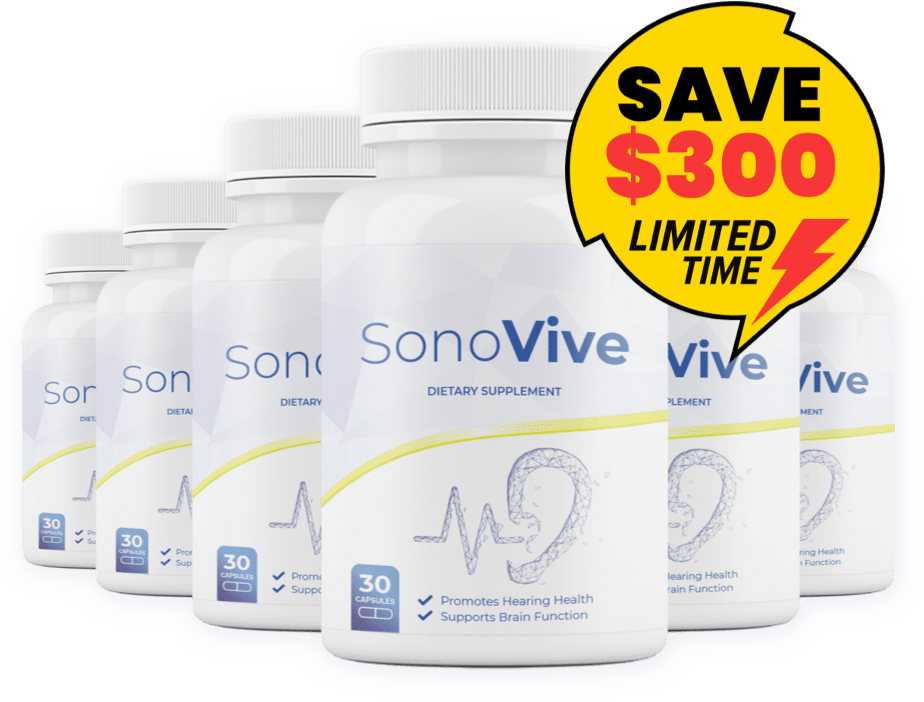

If you've noticed it's gotten harder to follow a conversation in a crowded restaurant, or you've had moments of occasional ringing or buzzing in your ears that seem to come and go — you're far from alone. It's one of the most common complaints adults over 45 bring up, and yet it rarely gets the attention it deserves.
Part of the reason may be that hearing-related wellness is often treated as purely mechanical — something that only involves the ear itself. But a growing number of researchers are looking further, at how circulation, nerve health, and the body's inflammatory response may all play a role in how well the auditory system functions as we age.
This broader view has shifted how some people think about supporting their hearing over time — moving away from a narrow focus on the ears in isolation, and toward a more general approach to auditory and nerve wellness.
Why It's Not Just About Volume
Most people assume hearing changes with age are simply about things getting quieter. In reality, many of the day-to-day frustrations — trouble isolating a voice in background noise, occasional ringing, or a feeling of "fullness" — relate less to volume and more to how the auditory nerve pathways and surrounding tissue are supported.
That's led some researchers and formulators to focus on natural ingredients that have traditionally been associated with circulation and nerve support, rather than approaches that only address the ear mechanically.
This is why interest has grown in natural, plant-based formulas designed to support the broader systems tied to healthy hearing function — rather than products aimed only at amplifying sound.
What People Are Turning To
Among the natural supplements gaining attention in this space is SonoVive, a formula described by its makers as an auditory wellness support supplement. It combines a blend of plant-based and nutrient ingredients selected for their traditional association with nerve health, healthy circulation, and cognitive clarity — areas researchers increasingly connect to how well the auditory system functions with age.

SonoVive
Auditory Wellness Support Formula — a natural supplement formulated to support healthy hearing function, nerve health, and mental clarity in adults 45+.
Is This Right For You?
SonoVive is formulated for adults over 45 who are researching natural options to support healthy hearing function, nerve health, and mental clarity as part of a broader wellness routine — particularly those who want a plant-based approach rather than a mechanical or medical device.
It is not a medication or hearing device, and it does not claim to treat, cure, prevent, or reverse any medical condition. If you have a diagnosed hearing condition or are currently under the care of a physician or audiologist, consult them before adding any supplement to your routine.
The formula is available through the official SonoVive website, where you can find full ingredient details, current pricing, and guarantee information.